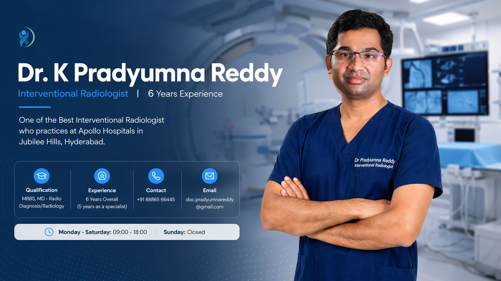

Dr. K Pradyumna Reddy
Interventional Radiologist | 6 Years Experience
One of the Best Interventional Radiologist who practices at Apollo Hospitals in Jubilee Hills, Hyderabad.


Dr. K Pradyumna Reddy is one of the Best Interventional Radiologist who practices at Apollo Hospitals in Jubilee Hills, Hyderabad. He has hands-on experience of 6 years in providing various radiology services in the Interventional Radiology Department.
He completed MBBS from the prestigious SVS Medical College – Mahabubnagar in 2011 and MD in Radio Diagnosis / Radiology from MediCiti Institute of Medical Sciences in the year 2015.
Later he worked as an Interventional Radiology and Musculoskeletal Radiology in Tan Tock Seng Hospital, Singapore for 1 Year.
After returning to India he did a fellowship in Intervention Radiology which involve Complex Interventional procedures like endovascular aortic repair (EVAR), trans jugular intravenous portosystemic shunt (TIPS) and complex venous interventions in the year 2018 from D Y Patil University, Mumbai.
He also worked Under Dr Gireesh Warawdekar in Lilavathi hospitals, Holy Family and Breach Candy Hospital etc in the year 2019.
His passion and dedication towards radiology services made him one of the Best Interventional Radiologists in Hyderabad at a very young age.
Over the past years, technology in radiology services has been improved effectively and some new innovative procedures also developed.
Key Procedures
Advanced image-guided and minimally invasive treatments
Endovenous Laser Ablation
Advanced treatment for varicose veins
HIFU - Fibroid Treatment
Non-invasive ultrasound-based therapy
Laser Treatment
Minimally invasive vascular care
Thrombolysis
Catheter-based clot removal
Radio-Frequency Ablation
Precision vein treatment
Varicose Veins Treatment
Comprehensive vascular care
Drug Delivery Therapy
Targeted chemo & antibiotics
Celiac Plexus Block
Pain management procedure
Laser Therapy
Advanced minimally invasive treatment
Uterine Fibroid Treatment
Image-guided solutions
He is one of the foremost experts in the field of liver cancer treatment. Specialised in Image-guided surgeries ranging from ultrasound-guided biopsy to Complex Aortic Replacements and TIPS.
He is also a specialist in performing Laser Therapies and Minimally Invasive Surgical Procedures, which are done by making tiny incisions instead of large cuts. Because of smaller incisions, you will have a quick recovery time, very little pain and fewer complications compared to open surgery. The benefits of Minimally Invasive Procedures are higher than traditional surgery.
Professional Journey
A timeline of education, training, and clinical experience
Professional Memberships
Affiliated with leading national and international radiology societies
Indian Medical Association (IMA)
Society of Interventional Radiology (SIR)
Cardiovascular and Interventional Radiology Society of Europe (CIRSE)
Asia Pacific Society of Interventional Radiology (APSCVIR)
Indian Society of Vascular Interventional Radiology (ISVIR)